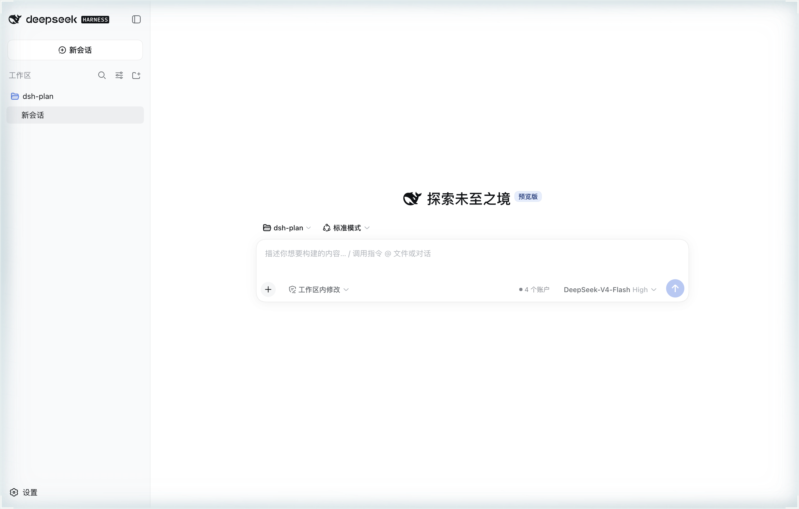
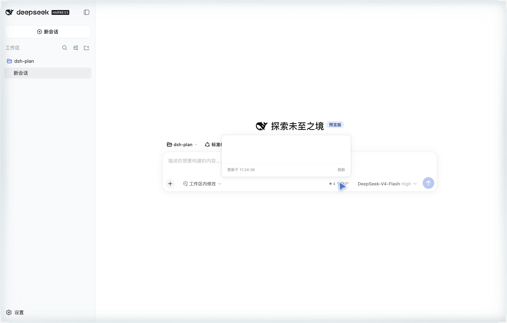
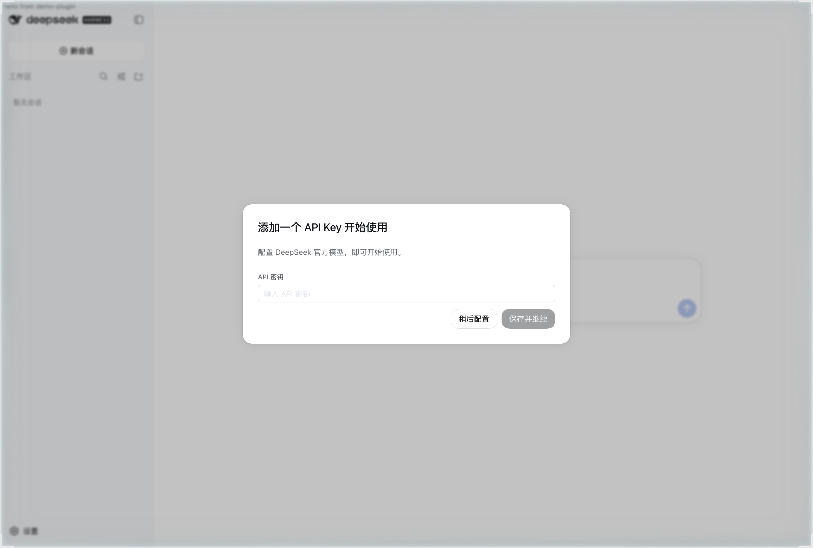

三个问题分别来自两份调研的结论（额度 API 调研 2026-09-11、插件架构调研），它们共同定义了这个插件的存在理由。
dsh 打包时固定了旧版 pi-ai（实测 0.84.4，上游已到 0.85.1，一次差 70 个模型）。 上游发了新模型，用户拿不到，只能等 dsh 下一次发版。
dsh 没有任何额度/余额设施（调研结论：从零建）；五家 provider 无一返回 rate-limit 响应头； 各家额度端点散在各处，格式不一。用户选模型时看不到哪个 provider 快没额度了。
浏览器端拿不到 key 值（credentials 单向流动），跨 provider 错配在界面上无迹可循。
实测案例：KIMI_CODING_API_KEY 被填成了 DEEPSEEK_API_KEY 的同值，
表现只是 kimi 一直查询失败。
三大功能柱与三个问题一一对应。前两个落点已实现并真机验证（2026-09-13）， 另两个落点是保留的正式需求（见第四幕）。
| 场景 | 用户要做什么 | 对应功能 |
|---|---|---|
| S1 | 在模型座位打开选择器，按 provider 过滤或搜索，每行显示余额，一眼看出谁快没额度；点选即切换 | FR-3.2 |
| S2 | composer 旁的徽标常显当前 provider 余量摘要，点开看各账户明细（余额/窗口/重置时间） | FR-3.1 |
| S3 | 设置页 Provider 标签看桥接状态、版本、额度明细、凭据体检结论，手动触发上游检查 | FR-3.4 / FR-1.4 |
| S4 | pi-ai 发新版后自动下载就位，重启生效；状态可查、可回滚 | FR-1.1 ~ FR-1.3 |
| S5 | （本期需求，未实现）从会话事件流感知实时用量与额度耗尽失败，不必手动查 | §7.2 |



shell.overlay 座位可用——这是 §7.1 缺口的可行性依据。| 编号 | 需求 | 验收要点 | 状态 |
|---|---|---|---|
| FR-1.1 | 自动跟进上游：监视 npm registry，启动时检查一次、6h 节流，新版本自动下载装依赖就位 | 新版出现在 vendor/pi-ai/<v>/；DSH_PROVIDER_UPDATE=off 可关 | ✅ 已实现 |
| FR-1.2 | 桥接装载：官方 llm-pi-ai bundle 拷贝跑在我们维护的新版 pi-ai 上；失败退化为纯计费模式 | 重启后目录含上游新模型；失败不拖垮启动 | ✅ 已实现 |
| FR-1.3 | 升级与回滚：换软链 + 重启生效；回滚 = 软链指回旧版本目录 | /provider/status 报版本/needsRestart | ✅ 已实现 |
| FR-1.4 | 桥接状态可诊断：版本、上游最新版、已发现路由表（含凭据名、不含值） | JSON 可见 | ✅ 已实现 🐞 字段断链 |
| FR-2.1 | provider 路由发现：合并 settings 的 llm-pi-ai.providers 与原生适配器路由（deepseek-official）；未配置的 catalog provider 不进面板 | node test/routes.mjs 通过 | ✅ 已实现 |
| FR-2.2 | 额度查询适配器：DeepSeek / Kimi Coding / GLM / Moonshot 用各家 key 免费 GET；Qwen 只显示说明 | node lib/adapters/run.js all 可跑测 | ✅ 已实现 |
| FR-2.3 | 统一账户快照：GET /plan/status，60s 缓存，?refresh=1 绕过，上游故障结构化报错 | 浏览器同源 fetch 可用 | ✅ 已实现 |
| FR-2.4 | 凭据体检：多个 provider 同一把 key 时报警；key 值只在宿主进程内比对，绝不下发 | node test/credential-check.mjs 通过 | ✅ 已实现 |
| FR-2.5 | 凭据解析：按 apiKeyEnv 经 credentials 服务解析（env → 凭据文件 → .env） | 与官方 llm-pi-ai 同通路 | ✅ 已实现 |
| FR-3.1 | 额度徽标 + 账户面板（落点：conversation.input.right） | 真机验证 2026-09-13 | ✅ 已实现 |
| FR-3.2 | 模型座位接管：搜索 / provider 过滤 / 每行余额 / 点选即切（落点：conversation.input.model，priority -10 遮蔽） | 真机验证 | ✅ 已实现 |
| FR-3.3 | /model 命令带余额：官方行禁用时接管，官方在时静默让位 | 让位路径已验；接管路径待验 | ✅ 已实现 |
| FR-3.4 | 设置页 Provider 标签：桥接状态 / 版本 / 额度明细 / 凭据体检（落点：settings.section） | 真机验证 | ✅ 已实现 |
| FR-3.5 | 数据面与官方同路：目录走 session/modelCatalog、切换走 session/selectModel、优先官方 modelDirectories 服务 | — | ✅ 已实现 |
| FR-3.6 | 接线可诊断：window.__dshProvider 暴露 applied / modelDirectories / face / seat | — | ✅ 已实现 |
一条主线：宿主半区代持密钥、代查额度、代管桥接；浏览器半区只做呈现与交互。 两半区之间只走同源 HTTP，这条边界同时决定了安全模型。
第三方插件拿不到 Typert 代码生成器，走不了 RPC 正规军；自建路由与 GUI 同源，浏览器裸 fetch 即可。代价：无鉴权层（见安全边界）。
浏览器包必须是固定 window.__ModuleLoader__.load 形状的 classic script；只内联不引依赖。开发时改完即生效。
模型目录走 session/modelCatalog、切换走 session/selectModel、优先官方 modelDirectories 服务——官方行为不变，我们只做呈现层增强。
| 非目标（明确不做） | 理由（来源） |
|---|---|
| 不依赖浏览器登录态 / token | 额度查询只吃 API key（Tier 1 原则，provider-quota-apis.md） |
| Qwen Token Plan 不做轮询 | 无公开端点且 ToS 明示仅限官方工具交互使用 |
| 不基于 rate-limit 响应头推断额度 | 五家均不返回相关头，实测否定 |
| 不用 chat completion 当探针 | 烧 credit 且有 ToS 风险 |
| 不接入 Kimi 控制台 JWT 接口 | 依赖网页登录态，违反 Tier 1；逆向记录备查 |
| key 值不出宿主进程 | 浏览器只拿结论与元信息 |
| 不改官方插件文件 | 接管只经 cordis.patch 禁用行 + slot 优先级遮蔽 |
0.0.0.0 暴露，/plan/status（余额、凭据名）与 POST /provider/update
（触发公网下载 + npm install）将无防护——部署时必须意识到这一点。
基线之外的两类遗留：正式需求但未实现（用户确认保留在需求内），以及 review 发现的缺陷。 这一幕是「核对需求」时最需要对账的部分。
| 编号 | 需求 | 说明与依赖 | 状态 |
|---|---|---|---|
| G1 | 侧边栏 sidebar.footer.action 入口 | 形态待定：额度徽标或跳转 Provider 设置页 | ❌ 缺口 |
| G2 | shell.overlay 全局额度徽标 | 可行性已被 demo 插件验证（图 5）；§G3 的实时用量数据是它的主要数据源 | ❌ 缺口 |
| G3 | 用量统计与失败归因（原始调研 §7.3，本期需求）：监听 llm/stream 累计 token 用量；session/event 持久用量；llm/retry 的 QUOTA/RATE_LIMIT 归因；经 sessionProjections 推送浏览器 | 与现有额度轮询互补不替代：轮询回答「账户还剩多少」（小时级），G3 回答「这次会话用了多少、刚才为什么失败」（秒级/事件级） | ❌ 缺口 |
updater.js 把 needsRestart / latestVersion 写进
vendor/status.json，而路由读的是 vendor/updater-state.json（只有 lastCheck/at），
且全库无任何读者读 status.json。后果：设置页「已下载待重启」提示、上游版本显示、needsRestart 横幅永不出现；
catalogPatches 字段宿主端从未产出，是死 UI。
修法：readStateFile() 合并两个状态文件。详见 REQUIREMENTS.md §8。
后台自动检查与 POST /provider/update 可并发对同一版本目录 rmSync + 重装；/plan/status 无请求合并，缓存落定前的并发请求会重复打上游。影响小。
client 的 rpcId 用 Date.now() 生成，同毫秒两请求会撞 id；HTTP 成对收发，仅 cosmetic。
resolveKey 里 typeof resolved === 'string' 分支永远不会命中（credentials.resolve 只返回对象）。无害。
node test/routes.mjs · node test/credential-check.mjs · node test/client-smoke.mjs